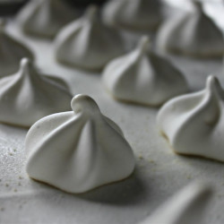

French Meringues

Descriptions
Authentic French Meringues from a patisserie in France.
Ingredients
- 4 egg whites
- 2 ¼ cups confectioners' sugar
Steps
- Preheat the oven to 200 degrees F (95 degrees C). Butter and flour a baking sheet.
- In a glass or metal bowl, whip egg whites until foamy using an electric mixer. Sprinkle in sugar a little at a time, while continuing to whip at medium speed. When the mixture becomes stiff and shiny like satin, stop mixing, and transfer the mixture to a large pastry bag. Pipe the meringue out onto the prepared baking sheet using a large round tip or star tip.
- Place the meringues in the oven and place a wooden spoon handle in the door to keep it from closing all the way. Bake for 3 hours, or until the meringues are dry, and can easily be removed from the pan. Allow cookies to cool completely before storing in an airtight container at room temperature.